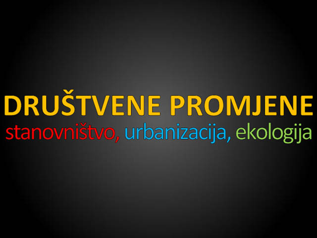
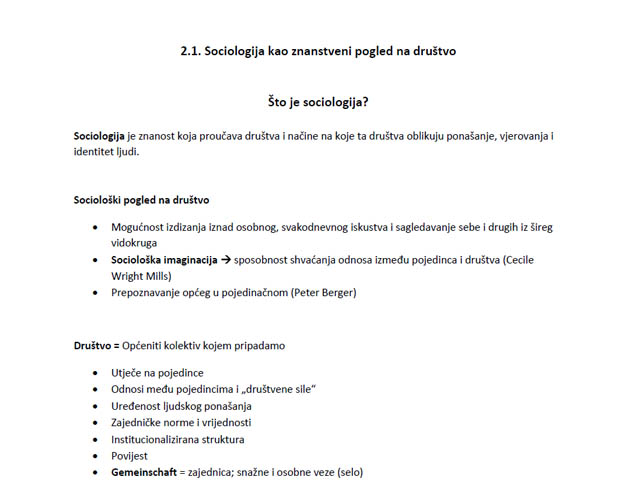

Prezentacije iz Sociologije
za preuzimanje prezentacije klikni na sliku (PDF format)
*prezentacije rađene po udžbeniku N. Fanuko - Sociologija (Profil - 2012.)
Sociologija - poglavlja



013 - Društvene promjene, stanovništvo, urbanizacija i ekologija


015 - Sociologija (skripta po udžbeniku)
Povijesni razvoj sociologije